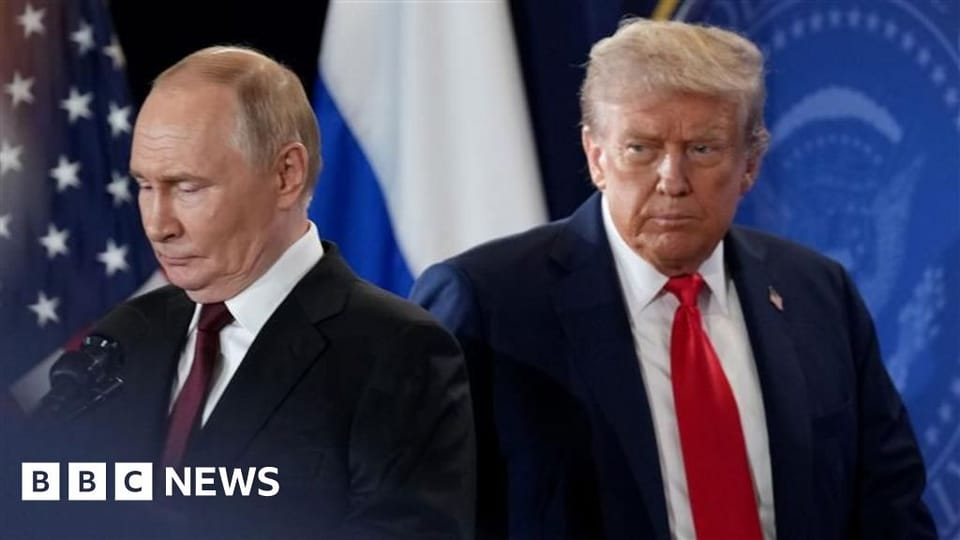

世界苦茶10月24日新闻 | 46条 | 美国终于开始制裁俄罗斯

美国终于开始制裁俄罗斯 | 特朗普将与习近平会晤 | 中共四中全会强调科技自主与产业现代化 | 马斯克要求大笔薪酬奖励
苦茶数据
美元兑人民币：7.12（昨日7.12，前日7.12）
美元兑日元：152.99（昨日152.54，前日151.78）
上证指数：3948（昨日3888，前日3902）
标普500指数：6738（昨日6699，前日6735）
比特币：111391（昨日108444，前日108656）
布伦特原油：65.73（昨日64.36，前日62.29）
中国新闻
• 四中全会未完成解放军高层人事变动。
中共中央军事委员会委员、中央军委纪委书记张升民升任中央军委副主席，成为星期四闭幕的中共二十届四中全会提拔的唯一军队高级将领。除张升民外，四中全会没有增补新的中央军委委员，表明解放军高层人事变动仍未完成。
• 从冠病到灭蚊。
中国广东省江门市最近因为灭蚊的事情，闹得人心惶惶。今年夏天，广东一些地方暴发基孔肯雅热疫情，这种疾病由伊蚊传播，因此各地面对蚊子如临大敌。原本以为天气要开始转凉，疫情也该慢慢消停了，没想到9月份疫情在江门反弹。当地大规模动员消杀灭蚊，有民众形容最近好像生活在“雾都”里。这原本是为了保障民众健康与生命安全，可公权力的越界却让这份初衷变了味。有江门市民上星期向媒体投诉，社区为了防疫，发出紧急通知，要求老旧小区中的单车房业主上交钥匙，配合防疫人员入户消杀。那些逾期未提供钥匙或未开门的，官方会拍照记录并由专业人员强制开锁。
• 美国议员敦促特朗普向习近平施压，关注被拘押的美国人和出境禁令。
立法者称北京是“世界上最大的劫持者”，利用出境禁令和拘留作为“筹码” 。一群美国共和党议员正敦促总统唐纳德·特朗普在预计下周举行的峰会上，向中国国家主席习近平提出他们认为在中国被不公正拘押或被禁止离境的美国人问题，称北京利用出境禁令和拘留作为获得筹码的“工具”。
• 四中全会公报：中共如何概述其核心政策目标。
2025年10月23日中共20届四中全会在10月23日闭幕并发表会议公报。公报概述了“十五五”时期的主要目标，强调了科技自主和产业现代化的重要性。观察家们认为，公报更多强调延续性，与中共以往的政策方向一脉相承。在为期四天的闭门会议结束后，中国官媒新华社发布了会议公报，概述了中国“十五五规划”的优先事项，该规划将于明年3月份的全国人大会议上正式公布。（翻评：延续性的另一面就是陈旧。）
• 中国和印度尼西亚将设立遥感中心以助力环境监测。
中印尼将建立遥感中心以强化环境监测 据北京方面称，双方共享卫星数据的协议将涵盖农业、林业和水资源等领域。“中国国土卫星遥感应用中心”表示，“这将为两国在农业、林业和水资源等资源管理方面提供有力的技术支撑，带来资源共享、优势互补和互利共赢。”该技术可以监测船舶交通以发现非法捕捞活动，绘制海岸侵蚀地图并跟踪海洋生态系统的健康状况。两国还将就数据共享、科研、项目开发、知识转移和能力建设开展合作。该中心未透露项目的具体地点或时间表，但称协议已于本月早些时候签署，标志着双方在该领域关系进入“新阶段”。中国在2021年曾提议与多个东南亚国家建立此类中心。
• 特朗普将于下周四在韩国与习近平会晤，作为其重要亚洲行程的一部分。
白宫证实，唐纳德·特朗普将于下周四在韩国与中国国家主席习近平会晤 白宫新闻秘书卡罗琳·利维特表示，特朗普将于周五夜间启程前往马来西亚，并将访问日本，随后在韩国与习近平会谈。美国总统唐纳德·特朗普将在10月30日于韩国与中国国家主席习近平举行会晤，白宫证实。白宫新闻秘书卡罗琳·利维特在周四的一次新闻发布会上表示：“当地时间周四上午，特朗普总统将与中华人民共和国主席习近平举行双边会谈。” 两位领导人的会晤将发生在美国总统对亚洲的访问行程结束时。
• 时隔多年之后，加拿大外长再度表示加中处于“战略伙伴关系”。
据加拿大通讯社报道，就在三年前，加拿大还称中国是“具有破坏性的全球力量”，如今，加拿大外交部长阿南德表示，加拿大现在将中国视为在充满危险的世界中的战略伙伴。周一她对加拿大通讯社表示，与中国建立战略伙伴关系，意味着要超越个别争议，不让这些问题破坏整体关系，同时也能让加拿大推进自身的经济和安全利益。她说：“如果我们希望在未来找到更多可以合作的领域，就必须打好基础。任何关系中都会有挑战，关键在于能否开展必要的对话，解决加拿大关心的问题。” 阿南德是在访问中国、印度和新加坡高级官员之后发表上述言论的。几天后，总理马克·卡尼将开启他上任以来首次亚洲之行，造访马来西亚、新加坡和韩国。阿南德此次访问。
印太新闻
• 高市政府：不排外但严控违规外国人。
就任经济安全保障相次日，小野田纪美接受记者团的采访 日本高市早苗政府将外国人政策视为主要课题之一。经济安全保障相小野田纪美还兼任与外国人构建有序共生社会推进担当相。10月22日，小野田在就任经济安全保障相的记者会上表示：「将对不遵守规则的人采取严格应对措施，并修订目前无法充分应对外国人相关局面的制度」。她指出，当前的课题是外国人的犯罪行为及其滥用各种制度，同时强调「出现了让国民感到不安和不公平的情况」。高市早苗的施政方针演说草案也明确提出：「在与排外主义划清界限的同时，作为政府将坚决应对此类行为」。日本出入境在留管理厅的数据显示。
• 日本签证手续费要涨价了。
日本政府最早在2026年度将签证申请手续费提高到与欧美相当的水准。随着访日外国游客的增加，日本政府计划将签证发放成本上升和物价上涨反映到手续费中。这一举措也被寄望于有助于缓解「过度旅游」问题。提升幅度将参考七国集团和经济合作与发展组织成员国的水准等，与相关省厅协商决定。还包括商务和长期居留签证等。日本外务省最早将在2025年度内进行公众意见征集，修改政令。日本的签证发行手续费与G7各国相比较为便宜。每次访日都需要取得的单次签证手续费在3000日元左右，有效期内可多次访问的多次签证手续费在6000日元左右。
• 日本政策渐显高市色彩,将限制大型光伏开发。
日本高市早苗政府已于10月22日正式启动。围绕经济及防卫等主要政策，新内阁成员纷纷发表言论，对石破茂政府时期的方针进行修正。随着公明党退出执政联盟、自民党与日本维新会就联合执政达成协定，体现「高市色彩」的政策转向正日益鲜明。其中，在环境能源政策方面，高市政府计划对大型光伏电站的开发采取监管。自民党与维新会的联合执政协议明确提出，将在2026年的例行国会上针对百万瓦级光伏电站「实施从法律上进行监管的措施」。日本目前还没有直接监管百万瓦级光伏电站的法律。
• 日本拟提前至2025年度使防卫费占GDP 2%。
日本首相高市早苗在预定于10月24日发表施政演说中，拟宣布在2025年度内将防卫费连同相关经费一并提高至相当于国内生产总值2%的水准。日本政府此前计划在2027年度实现这一目标。基于严峻的安全保障环境，将提前实现目标。围绕日本的防卫费，岸田文雄政权决定包括海上保安厅预算和基础设施建设费等相关费用在内，到2027年度把防卫费增至GDP的2%。目前2025年度的防卫相关预算占日本GDP的1.8%。在2025年度补充预算的编制中将增加防卫费，确保2%的水准。
• 民进党立委称赖清德计划提出550亿元国防特别预算。
台湾民进党立委王定宇星期一在美国透露，赖清德政府计划提出新的国防特别预算，规模高达新台币1.3万亿元，内容包括建立“台湾之盾”防空系统等防卫能力。王定宇出席在美国马里兰州埃利科特城举行的第24届“美台国防工业会议”时，在当地时间星期一向台湾媒体透露以上消息。不过，台湾国防部长顾立雄表示，具体金额和内容还须要经过行政院审议和立法院通过才能定案。综合《联合报》和《信传媒》星期二报道，王定宇称，台湾政府预计10月底、11月初提出这项破万亿元的“不对称作战及作战韧性特别条例草案”，将分七年编列，大部分支出集中在前四年。王定宇指出。
• 忧习特会将损台湾利益 台高层频繁受访拉拢MAGA网红。
由于担忧华盛顿可能在中美谈判中牺牲台湾的利益，台湾政府高层正积极接触与美国总统特朗普阵营关系密切的播客主持人和网红，希望借助他们的影响力，吸引特朗普的注意。近几个月来，台湾总统赖清德及驻美代表俞大㵢等人密集接受了美国保守派人士的采访，利用这些平台向支持“让美国再次伟大”的受众宣讲台湾安全问题。在这些采访中，台湾高层宣扬了台美共同的民主价值观，并鼓励双方深化贸易和投资联系。赖清德更在其中一个节目中说，若特朗普能促使中国国家主席习近平永远放弃对台动武，必将成为诺贝尔和平奖得主。知情人士说，台北这一策略旨在提升台湾在特朗普议程中的地位，因为台北越来越担心特朗普可能在与北京的贸易谈判中损害台湾的利益。
• 金边新机场盛大启用，柬埔寨借机强调与地区国家及中国的纽带。
金边新机场盛大启用，柬埔寨宣扬其地区与中国纽带 出席启用仪式的官员和商界领袖表示，该机场部分由中国国有企业承建，将使柬埔寨成为交通枢纽。替代了首都此前机场的特乔国际机场，普华永道预测今年余下时间该机场将接待530万名旅客。该专业服务公司还预测，随着机场进入新发展阶段，年满载运力到2030年可达1010万乘客，2040年可达1500万乘客。
科技新闻
• 欧洲巨头就一项价值60亿欧元的航天旗舰达成协议，以对抗埃隆·马斯克。
欧洲终于开始回击埃隆·马斯克。空中客车、莱昂纳多和泰雷兹周四表示，已达成初步协议，将合并各自的航天业务，打造欧盟委员会主席乌尔苏拉·冯德莱恩设想的那类欧洲冠军。三家公司在宣布“欧洲航天领域的领先企业”时表示，将把其卫星和航天系统制造业务合并为一家65亿欧元的公司，预计将在全欧洲雇佣约2.5万名员工。
• 特斯拉年底将移除Robotaxi的安全驾驶员。
特斯拉11月将对CEO马斯克价值可能高达一万亿美元的新薪酬方案投票。马斯克周三表示，这项薪酬方案将在10年内为他带来额外12%股份，这对于确保他对公司的控制权至关重要，尤其是在公司向AI和 Optimus 等机器人项目扩张之际。“我对自己在特斯拉拥有多少投票控制权的根本担忧是，如果我打造了这支庞大的机器人军队，未来我是否可能被罢免？如果连起码的影响力都没有，那我不会安心打造这支机器人军队。”特斯拉还计划在今年年底前将奥斯汀的无人驾驶出租车中的安全驾驶员移除。他说，特斯拉的新车型Cybercab计划于明年第二季度投产，这是款自动驾驶的双座车辆，无方向盘或踏板。
• 消息人士称美国考虑对华实施软件出口限制。
据一位美国官员和三位听取了美国当局简报的人士透露，特朗普政府正考虑限制一系列以美国产软件为核心的对华出口产品，从笔记本电脑到喷气发动机，以回应北京近期扩大稀土出口管制的举措。尽管该方案不是唯一选择，但如果落实将兑现美国总统特朗普本月早些时候关于禁止向中国出口关键软件的威胁，并限制所有含有或使用美国软件生产的商品的全球出货。10月10日，特朗普在社交媒体上表示，将从11月1日 起对中国输美商品加征 100% 新关税，并对所有关键软件实施新的出口管制，但未透露更多细节。
经济新闻
• 美国正在以前所未有的速度积累债务，八月到现在增加一万亿。
财政部最新报告显示，联邦政府停摆的背景下，美国政府国债总额周三突破38万亿美元，再创历史新高，当前债务规模相当于国内生产总值的130%，人均债务达11.1万美元。这也是疫情之外，美国首次以如此快的速度新增1万亿美元债务。今年8月，美国的国债总额刚刚达到37万亿美元。宾夕法尼亚大学沃顿预算模型负责人、曾在小布什政府财政部任职的肯特·斯梅特斯表示，债务负担不断上升，最终会带来更高的通胀，削弱美国人的购买力。美国政府问责局指出，债务上升对民众的影响包括：房贷、车贷等借款成本上升；企业投资能力下降导致工资降低；商品和服务价格上涨等。
• 电动车电池制造商Gotion放弃在密歇根建设24亿美元工厂的计划。
中国公司Gotion在特朗普与习近平会晤前几天放弃在美国建厂的计划 Gotion在经历多年诉讼和因与中国关系引发的争议后，放弃在密歇根州建设电动汽车电池工厂。密歇根经济发展公司在给《华盛顿邮报》的一份声明中表示，虽然“这不是我们希望的结果，但我们认识到对服务对象负有重大责任，必须确保他们辛苦缴纳的税款得到明智和适当的使用”。该机构补充称，正在“积极追讨”为该项目购买270英亩土地而支出的2360万美元，以及拨给Gotion但未用于该大型开发准备工作的2640万美元。声明还指出，Gotion从未达到关键产业计划所要求的获得1.25亿美元州政府拨款的条件，因此该款项从未发放。
• 中国九月网约车订单量同比下降超两成。
据网约车监管信息交互系统监测，截至上月30日，全国共有393家网约车平台公司取得网约车平台经营许可，环比持平。网约车监管信息交互系统九月共收到订单信息7.58亿单，环比下降3.9%。去年九月系统共收到订单信息9.89亿单，据此计算，九月网约车订单量同比下降23.4%。
• 埃隆·马斯克表示，他想阻止“企业恐怖分子”夺取对特斯拉的控制权。
埃隆·马斯克表示，他需要增持特斯拉股份，以至于可能成为世界上首位万亿美元富豪。但本周他表示，其目标并非增加他在全球的领先财富。相反，马斯克称，史上最大的一笔薪酬方案是为了保护他的公司。“我并不是要去花那些钱，”马斯克周三在一次投资者电话会议上说。
• 法国议员投票通过提高对美国科技巨头的税收。
在就法国2026年预算进行的持续谈判中，法国议员投票赞成将对科技巨头征税提高五倍。周三在国民议会财政委员会通过的该修正案将把对科技巨头的数字服务税从3%提高到15%；同时将全球营收门槛从7.5亿欧元提高到20亿欧元——根据总统埃马纽埃尔·马克龙党派成员让-雷内·卡泽讷夫提出的提案，这一举措可保护规模较小的本国企业免受该税的影响。
• 随着抵押贷款利率回落，美国9月份房屋销售加速，达到自2月以来的最快水平。
美国二手房销量在九月加速至自二月以来的最快速度，因抵押贷款利率回落 由于抵押贷款利率下降和市场上待售房源增加，购房者积极入市，美国已成交二手房销售在九月提速。全国房地产经纪人协会周四表示，经季节调整后的年率为406万套，较八月增长1.5%。这是自二月以来的最快销售速度。较去年九月，销量增长4.1%。该项最新销量略低于FactSet预测的大约407万套。全国中位销售价较去年同期上涨2.1%，至415,200美元。这是连续第27个月同比上涨，也是自1999年有数据以来任何九月的最高中位价。
• 因对Nexperia芯片的担忧，汽车行业“处于风暴中心”。
围绕总部位于荷兰但为中国所有的芯片供应商 Nexperia 的地缘政治之争，正令欧洲汽车制造商惊恐不已：他们担心将被芯片短缺重创，供应链可能遭受严重破坏，生产线被迫停工。就在荷兰政府接管 Nexperia 数周后，美国和中国对该公司均实施了出口管制，汽车行业从 Nexperia 获取的关键芯片供应正在减少。“我们很快将在全球范围内看到停产和放缓，因为很多供应商手中没有充足的芯片库存，”一位因事态敏感而要求匿名的高级汽车官员说。
• 各国民粹主义者愿意接受的移民：外籍劳工计划正迅速兴起。
本文刊发在经济学人。引入移民如今有了一个令人意外的新榜样。派，也非全球化的忠实信徒，而是意大利总理梅洛尼。她在2022年以极右翼纲领上台，如今却计划在明年发放16.5万份低技能工作签证，而五年前这一数字仅为3万。意大利还与印度签署了劳动力流动协议，一家招聘公司称其为“全球最具进步性”的协议之一。梅洛尼并非唯一开始“拥抱”移民的极右翼领导人，至少是某种类型的移民。匈牙利总理欧尔班曾表示，匈牙利的经济根本不需要任何移民，但他如今悄然推行外籍劳工项目。2024年，大约有7.8万非欧盟移民在匈牙利工作。
• 中美10月25日起就关税进行部长级磋商。
美国财政部长贝森特10月22日表示，中美部长级磋商将于25~26日在马来西亚举行。他还暗示如果中国不调整稀土的新出口管制，将与盟国联手采取新的对抗措施。贝森特在接受美国福克斯新闻网采访时透露了上述消息。美国方面由贝森特和美国贸易代表办公室代表格里尔，中国方面由副总理何立峰等人参加部长级磋商。中美两国首脑计划10月底在举行亚太经济合作组织领导人非正式会议的南韩举行会谈，目前正在协调。贝森特表示，「希望问题在周末得到解决，两国首脑能以积极的态度进行会谈」。
• 摩根大通表示，如果北京取消补贴，中国汽车销量将在2026年大幅下滑。
摩根大通表示，如果北京停止向购车者发放现金补贴和税收优惠，2026年中国汽车销量可能会下滑，终结六年的增长纪录。该行的预测对国内约100家车企的业绩前景构成阴影。“在乐观情景下，我们预计明年零售汽车销量将保持持平，”摩根大通亚太区汽车研究负责人尼克·赖在接受采访时表示。“市场有超过50%的概率出现同比下滑，因为大量需求可能只是被提前透支了。”他补充称，在更谨慎的情景下，中国内地汽车销量明年可能下滑3%至5%。中国汽车行业上一次收缩是在2020年，当年车企向客户交付总计1950万辆，同比2019年下降6.2%，中国乘用车协会数据显示。补贴和税收优惠到期是造成悲观预期的原因。
• 币安在特朗普家族的投入和努力后终于有了回报，特朗普正式赦免赵长鹏。
据华尔街日报，特朗普已签署赦免令，赦免了因罪被定的加密货币交易所币安创始人赵长鹏。赵长鹏多月来一直努力协助特朗普家族建立和运营加密货币公司。特朗普于周三签署赦免令，据透露，特朗普最近向顾问表示，他认同关于赵长鹏及其他人遭受政治迫害的说法。白宫新闻秘书卡罗琳·莱维特表示，特朗普“行使了宪法赋予的权力，赦免了赵长鹏。他是拜登政府打击加密货币战争的受害者之一。” 她还说：“拜登政府的加密货币战争已经结束。” 赦免令可能为币安重返美国铺平道路。这家全球最大加密货币交易所曾于2023年承认违反美国反洗钱法规，被禁止在美国运营。
• 欧盟终于对住房危机承担起责任。
数十年来，欧盟在住房政策上的立场一直很简单：这不是我们的事。住房并未在任何欧盟条约中被明确列为机构职权，尽管布鲁塞尔出台过涉及建筑能效或建筑材料质量等议题的立法，但它一直将住房市场的监管留给各国、地区和地方当局——直到现在。出席周四欧洲理事会峰会的各国领导人正在放弃这一立场，承认他们必须就一场已无法忽视、并助长极右翼势力的住房危机作出统一回应。
俄乌战争
**• 美国财政部10月22日宣布对俄罗斯最大的两家石油企业俄罗斯石油公司和卢克石油公司及其子公司实施制裁。 **
财长贝森特称，制裁是因为普京拒绝结束战争，这些公司正为俄罗斯的战争机器提供资金。美财政部准备在必要时采取进一步行动，支持特朗普结束战争的努力。特朗普22日与北约秘书长吕特会面时表示，他已经取消与普京的会面，原因是“感觉不对”。特朗普还称，尚未准备好向乌克兰提供“战斧”导弹，因为乌克兰人至少需要6个月才能学会使用。特朗普还希望看到习近平利用其对普京的影响力来停止战争。《华尔街日报》报道称，美国取消了一项对乌克兰使用西方盟友提供的远程导弹的关键限制，将批准权从国防部长转移至美军欧洲司令部司令。特朗普在被记者问及时否认自己直接批准乌使用导弹，似乎对批准权转移一事不知情。欧盟国家22日批准了对俄罗斯的第19轮制裁措施，包括禁止进口俄罗斯液化天然气。瑞典22日宣布将向乌克兰出口“鹰狮”战斗机。正在访问瑞典的泽连斯基称，乌克兰预计购买至少100架“鹰狮”，计划明年接收并使用。
• 欧盟因支持俄罗斯战争而对与国家有关联的中国石油公司实施制裁。
欧盟因支持俄罗斯战争而制裁与国家相关的中国石油公司 北京谴责最新惩罚涉及15家实体并重申“从未向任何冲突方提供致命武器” 欧洲联盟已对两家中国大陆炼油厂和一家总部位于香港的石油贸易商实施制裁，作为其遏制俄罗斯战争经济的最新努力，事件引来北京的严厉反驳。这些公司被列入欧盟27个成员国周四早上达成的一揽子更广泛制裁名单中，欧盟共惩处了15家在中国大陆或香港注册的实体，理由是布鲁塞尔认为它们与俄罗斯进行了非法贸易。中国外交部立即回击，重申其立场称“从未向任何冲突方提供致命武器，并对双用途物品实行严格的出口管制”。
• 中国国有石油巨头因担忧美国制裁而暂停购买俄罗斯石油。
据路透报道，在美国对俄罗斯两大石油公司——俄罗斯石油公司和卢克石油公司实施制裁后，中国国有石油企业已暂停采购海运俄罗斯石油。海运俄罗斯石油的最大买家印度的炼油厂，也准备大幅削减从俄罗斯进口的原油，以避免遭到美国制裁。由于俄罗斯两个最大客户的石油需求大幅下降，莫斯科的石油收入将面临压力，全球主要进口国不得不寻求替代供应，从而推高全球油价。消息人士称，由于担心受到制裁，中国四家国有石油公司——中国石油、中石化、中海油和振华石油，至少在短期内将避免参与海运俄罗斯石油交易。中国每天通过海运进口大约140万桶俄罗斯石油，其中大部分由独立炼油厂采购，包括一些被称为“茶壶厂”的小型炼油企业。
• “非常谨慎的决定”——乌克兰央行维持利率不变。
乌克兰国家银行将基准利率维持在15.5%，并警告称在俄罗斯对能源系统的攻击以及基辅持续的预算压力下，通胀可能会加剧。该行行长安德里·皮什内伊在10月23日宣布这一决定时表示：“尽管过去数月通胀有所回落，但通胀预期仍然偏高，且通胀风险上升，尤其是与更大范围的能源短缺和更高预算需求相关的风险。” Investment Capital Ukraine的金融分析师米哈伊洛·德姆基夫将此举形容为“非常谨慎”，并补充说这“有些出乎意料”。该行此前曾预测将在2025年最后一季度开始降息。
• 希腊领导人敦促欧盟就联合防务债务问题采取行动。
希腊总理基里亚科斯·米佐塔基斯周四在欧盟领导人峰会前强调，欧盟必须在筹集数十亿欧元以帮助各国支付增加的军费方面发挥更大作用。米佐塔基斯表示，他将利用在布鲁塞尔的会议呼吁欧盟进一步行动，称“这是一个我们意识到需要在欧洲防务上承担更多责任的转折点”，并支持为共同项目进行全欧范围的借贷。俄罗斯对乌克兰的战争，近几个月来包括敌对无人机和俄国战斗机多次侵犯欧盟领空，已让人们更加关注集体安全。
• 在几个月的挫折之后，乌克兰将期待已久的美国对俄制裁视为“重大转变”。
“重大转变”——在长期失望后，乌克兰对期待已久的美国对俄制裁表示欢迎 在美国总统唐纳德·特朗普放弃向乌克兰提供战斧导弹的计划、令乌克兰方面几度失望几天后，基辅官员对美国对莫斯科实施的新一轮制裁表示欢迎，认为这可能表明华盛顿准备对克里姆林宫施加实质性压力。自特朗普上任以来，美国首次对莫斯科实施制裁，针对两家俄罗斯石油巨头卢克石油和俄罗斯石油公司及其子公司。“这非常令人高兴，也出乎意料，特朗普终于从口头转向了具体行动，”乌克兰议员，议会外交事务委员会主席奥列克桑德·梅热科对《基辅独立报》表示。“这是一次重大转变。但就这些制裁本身而言。
• 突发：立陶宛称俄罗斯军机侵犯其领空。
编者按：此为持续更新的报道。立陶宛总统吉塔纳斯·瑙塞达宣布，两架俄罗斯军机于10月23日晚短暂侵犯立陶宛领空。波音苏-30战机和伊尔-78加油机从加里宁格勒飞抵约700米进入立陶宛领空，并在该处滞留约18秒，立陶宛军方表示。“这是对国际法和立陶宛领土完整的公然侵犯，”瑙塞达说，并表示立陶宛外交部将召见俄罗斯外交官。立陶宛总理英佳·鲁吉涅内在脸书上表示，此次事件“再次表明俄罗斯不顾国际法和邻国安全，表现得像一个恐怖主义国家。然而，这种行为不会影响我们——立陶宛保持坚定、团结并准备保卫自己。
• 冬季残奥会将没有俄罗斯和白俄罗斯运动员。
已获发布参赛资格的俄罗斯和白俄罗斯残奥运动员将不会出现在2026年冬季残奥会上，尽管国际残奥委员会已解除对他们的禁令。尽管IPC负责监督赛事，但米兰和科尔蒂纳丹佩佐举办的六个项目由四个独立的国际联合会分别管理。三个联合会决定继续对这两个国家的运动员实行禁赛，尽管现在允许俄罗斯和白俄罗斯参加冰球项目，但这一决定来得太晚，他们已无法参加资格赛。自2022年俄罗斯入侵乌克兰以来，两国就被暂停参加残奥比赛，白俄罗斯是俄罗斯的亲密盟友。2023年曾引入部分禁令——允许运动员以中立身份参赛。IPC成员在上月的会议上投票决定解除对两国的暂停，允许俄罗斯和白俄罗斯的残奥运动员以本国旗帜参赛。
世界新闻
• “极具象征意义的一刻”：查尔斯国王与教皇共同祈祷。
查尔斯三世国王在对梵蒂冈的国事访问期间，成为首位与教皇公开一同祈祷的英国国教会首脑。英国广播公司记者马克·洛文在圣彼得广场见证了两人的祈祷，他将此形容为“神学史上具有巨大象征意义的时刻”。当天早些时候在会见教皇时遵循戴黑色着装礼节以示尊重的王后，在仪式上被看到身着白色。西斯廷礼拜堂内的礼拜将来自天主教会与英格兰教会的神职人员与唱诗班聚集在一起，查尔斯国王为英格兰教会的最高总督。
• 欧洲议会主席警告称，欧洲中间派或许必须与极右合作才能推动事务进展。
欧洲议会主席罗伯塔·梅索拉周四表示，长期主导布鲁塞尔的中间派力量可能不再能够通过立法。如果真是如此，中间派可能不得不与右翼团体合作才能通过法律。梅索拉在欧盟峰会上发表上述讲话，此前一天议会成员在一项旨在为企业减轻繁文缛节的里程碑提案上投下反对票，围绕欧盟在多大程度上放宽法律存在分歧。该投票在各国首都引发愤怒。“欧洲议会昨天的决定不能接受，”德国总理弗里德里希·梅尔茨在抵达布鲁塞尔参加欧盟领导人峰会时表示，称这一决定是“一个致命错误，必须纠正”。
• 新的影像显示，以色列的控制线比预期更深入加沙。
新的影像显示以色列控制线深入加沙超出预期 BBC Verify 的分析发现，以色列军方对加沙的控制范围比与哈马斯达成的停火协议所预期的更深入。在协议的第一阶段，以色列同意撤退到沿加沙北、南和东部划定的一条边界线。军方发布的地图上用一条黄色线标出该分界线，已被称为“黄线”。但新的视频和卫星图像显示，驻守部队在两处设置的用以标示分界线的标记，被放置在地带内比预期撤退线向内延伸数百米的位置。以色列国防部长以色列·卡茨曾指示部队放置黄色方块作为标记，并警告称任何越过该线的人“将遭到开火”。边界线附近已至少发生两起致命事件。当 BBC Verify 就此向以色列国防军求证时，军方未直接回应指控。
• 法国法院裁定道达尔能源以环保宣传误导消费者。
法国一家法院今日裁定，石油巨头道达尔能源在声称自己是向绿色能源转型的领导者时，对其客户和公众进行了误导。自2021年将品牌从“道达尔”更名为“道达尔能源”以来，这家法国石油生产商发起了一项广告活动，声称公司“立志于在2050年实现碳中和”。其还宣称“成为能源转型的主要参与者”，并将“可持续发展置于我们战略、项目和运营的核心，以按照联合国界定的可持续发展目标，为民众福祉作出贡献”。
• 消息人士告诉BBC，法国正在撤回拦截移民船只的承诺。
多名接受BBC采访的消息人士称，法国正在退回此前更强力在海上拦截小艇，阻止其横渡英吉利海峡的承诺。现有证据显示，法国当前的政治动荡在一定程度上应承担责任，但这对英国政府解决该问题的努力无疑是一次打击。与此同时，严重超载的充气小艇几乎每天都会从敦刻尔克港附近一条浅滩潮汐运河出发。负责英国边境安全的马丁·休伊特已对法国方面的拖延表示“沮丧”。
• 法国又发生一起博物馆盗窃案，2000枚金银币被盗。
大约2000枚价值约9万欧元的金银币在法国另一家博物馆遭窃——发生在巴黎卢浮宫大胆盗取部分法国王室珠宝案数小时后。事件发生在周日晚，地点为法国东北部朗德雷斯一座纪念法国哲学家丹尼斯·狄德罗的博物馆。当地官员称，周二“光明之家”开馆时，工作人员发现一个展柜被砸破并报警。地方当局在向法国媒体发布的声明中表示，窃贼以“极高的专业性”挑选了这些硬币。这是近期法国多个文化机构接连遭劫的最新一例。据当地媒体报道，被盗硬币铸造年代在1790年至1840年之间，属于该市的私人收藏，2011年在现为博物馆的建筑翻修时被发现并入藏。
• 范斯称以色列议会就吞并约旦河西岸的投票是“侮辱”。
范斯称以色列议会就吞并约旦河西岸的投票是“侮辱” 耶路撒冷——美国副总统JD·范斯周四批评以色列议会就吞并由以色列占领的约旦河西岸地区进行的一次象征性投票，称此举是“侮辱”，并且违背美国总统唐纳德·特朗普政府的政策。以色列议会周三以微弱优势通过了一项支持吞并约旦河西岸部分地区的初步象征性投票，此举显然意在在范斯仍在国内时羞辱总理本杰明·内塔尼亚胡。该法案周三仅需在出席议员中获得简单多数，结果以25票赞成，24票反对通过。但该法案要成为法律或在拥有120个席位的议会中获得多数，似乎不太可能。
• 突尼斯近海一艘船沉没，40名移民遇难，其中包括婴儿。
当局称，一艘载有约70名移民的船只在突尼斯中部地中海港口马赫迪亚附近沉没，至少40名包括儿童在内的移民死亡，成为今年该地区最致命的海上灾难之一。官员表示，船上所有人员均来自撒哈拉以南非洲，但未提供更多细节。这是试图从非洲经地中海前往欧洲的移民遭遇的最新一场灾难。联合国提供的数据显示，2023年有超过21万人试图穿越中部地中海；其中逾6万人被拦截并遣返回非洲海岸，近2000人在海上丧生。周三发生的这起事故中约有30名移民被救起。突尼斯当局已对此次沉船的原因和具体情况展开调查。
• 路透新民调显示，多数美国人认为应该承认巴勒斯坦国，6成受访者认为以色列反应过度。
路透社/益普索一项民调显示，大多数美国人认为美国应承认巴勒斯坦国地位，包括80%的民主党人和41%的共和党人。这表明特朗普反对承认巴勒斯坦建国的立场与公众意见不符。这项为期六天、于本周一结束的民调显示，59%的受访者支持美国承认巴勒斯坦国，33%表示反对，其余则表示不确定或未作答。在特朗普所代表的共和党内，大约一半人反对承认巴勒斯坦国，41%则表示支持。近几周，越来越多国家，包括英国、加拿大、法国和澳大利亚等美国盟友，已正式承认巴勒斯坦建国，引发以色列的强烈谴责。1948年以色列建国导致数十万巴勒斯坦人流离失所，并引发长达数十年的冲突。自2023年10月哈马斯武装突袭以色列以来。